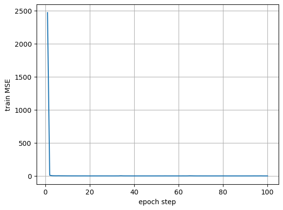
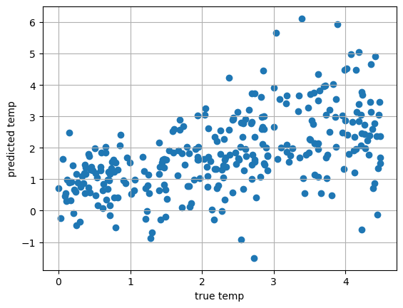
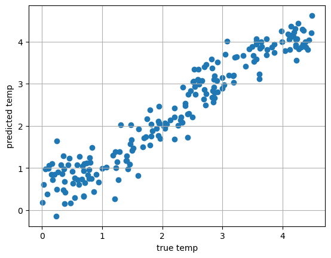

Image Regression#
In the previous class of SVM classification. We flatten images to feature vector and usimg SVM to classify the Ising model results to above or below Curie temperature categories.
Artificial neural network#
Here, we will use ANN to predict the corresponding temperature of an image.
This dataset is obtained from https://mds-book.org/Content/datasets, which is the supplementary data of the textbook Materials Data Science: Introduction to Data Mining, Machine Learning, and Data-Driven Predictions for Materials Science and Engineering (2024) by Stefan Sandfeld.
The majority of the code is generated by ChatGPT.
If you do not have
sklearnandPyTorchinstall, you can install them by opening a termial window and typepip install scikit-learnorconda install scikit-learn. For PyTorch:pip install torch torchvision torchaudioorconda install pytorch torchvision torchaudio -c pytorchon Mac,pip install torch torchvision torchaudioon windows. You can install GPU module if needed. You can find more information of installation by online search or ask AI bots.For installation using Jupyter Notebook, add
!beforepipfor example,!pip install scikit-learn. Run the command in a code cell.
First, loading the Ising model results. The several cells below are identical to the previous coding demonstration.
import numpy as np
import matplotlib.pyplot as plt
from mdsdata import load_Ising
images, labels, temperatures = load_Ising()
# extract 1000 sets out of the 5000 randomly
idx = np.random.choice(5000, 1000, replace=False) # 1000 unique indices
subset_im = images[idx]
subset_tp = temperatures[idx]
subset_lb = labels[idx]
# grab 32x32 pixels from the original images
n_images = np.zeros((1000, 32, 32))
for i in range(1000):
n_images[i,:,:] = subset_im[i,:32,:32]
n_samples, h, w = n_images.shape
print(n_samples, h, w)
1000 32 32
#Cool slider to browse all of the images.
from ipywidgets import interact
def browse_images_I(images, temperatures, labels):
n = len(images)
def view_image(i):
plt.imshow(images[i], cmap='viridis', interpolation='nearest')
plt.title('%s' % f"T={temperatures[i]:.2f}, label={labels[i]}")
plt.axis('off')
plt.show()
interact(view_image, i=(0,n-1))
browse_images_I(n_images, subset_tp, subset_lb)
Load relevant libraries: Pytorch and sklearn.
import numpy as np
import torch
import torch.nn as nn
import torch.optim as optim
from torch.utils.data import TensorDataset, DataLoader
from sklearn.model_selection import train_test_split
from sklearn.preprocessing import StandardScaler
from sklearn.metrics import r2_score, mean_absolute_error
Flatten the images
# flatten each image using reshape
# X_np has 1000 rows, each row is a 1x(32x32) row vector
# Note that X_np and y_np are in the format of np array
# y: output is the temperature
X_np = n_images.reshape(n_images.shape[0],-1)
y_np = subset_tp
Note that the sklearn and PyTorch need labels in different shapes. sklearn uses a 1D array y.shape =(N,), but PyTorch uses a 2D array y.shape = (N,1). Thus, we need to be careful in handling these labels when using different libraries.
print("X_np shape:", X_np.shape)
print("y_np shape for sklearn:", y_np.shape)
# Make sure y is 2D: (N, 1)
if y_np.ndim == 1:
y_pt = y_np.reshape(-1, 1)
print("y_np shape for PyTorch:", y_pt.shape)
X_np shape: (1000, 1024)
y_np shape for sklearn: (1000,)
y_np shape for PyTorch: (1000, 1)
Train-test split and scale the y vecotr
from sklearn.model_selection import train_test_split
# Train/test split
X_train_np, X_test_np, y_train_np, y_test_np = train_test_split(
X_np, y_pt, test_size=0.3, random_state=42)
y_scaler = StandardScaler()
y_train_np_scaled = y_scaler.fit_transform(y_train_np) # (N_train, 1)
y_test_np_scaled = y_scaler.transform(y_test_np) # (N_test, 1)
Convert data types from np array to torch tensor. PyTorch uses tensor data type that can be moved between CPU and GPU. This allows running machine learning on GPU.
Split data to batches to enhance efficiency of training.
# To torch tensors (X is already roughly scaled: 0/1; we just cast to float)
X_train_torch = torch.from_numpy(X_train_np).float()
X_test_torch = torch.from_numpy(X_test_np).float()
y_train_torch = torch.from_numpy(y_train_np_scaled).float()
y_test_torch = torch.from_numpy(y_test_np_scaled).float()
print("X_train_torch:", X_train_torch.shape)
print("y_train_torch:", y_train_torch.shape)
batch_size = 32
train_dataset = TensorDataset(X_train_torch, y_train_torch)
test_dataset = TensorDataset(X_test_torch, y_test_torch)
train_loader = DataLoader(train_dataset, batch_size=batch_size, shuffle=True)
test_loader = DataLoader(test_dataset, batch_size=batch_size, shuffle=False)
X_train_torch: torch.Size([700, 1024])
y_train_torch: torch.Size([700, 1])
Set up an ANN model and initialize the model.
class ANNRegressor(nn.Module):
def __init__(self, in_features=1024, hidden1=512, hidden2=256):
super(ANNRegressor, self).__init__()
self.net = nn.Sequential(
nn.Linear(in_features, hidden1),
nn.ReLU(),
nn.Linear(hidden1, hidden2),
nn.ReLU(),
nn.Linear(hidden2, 1) # 1 output (scaled temperature)
)
def forward(self, x):
return self.net(x)
model = ANNRegressor()
print(model)
# If using GPU:
# model = ANNRegressor().to(device)
ANNRegressor(
(net): Sequential(
(0): Linear(in_features=1024, out_features=512, bias=True)
(1): ReLU()
(2): Linear(in_features=512, out_features=256, bias=True)
(3): ReLU()
(4): Linear(in_features=256, out_features=1, bias=True)
)
)
Select types of loss function and minimizer (algorithm).
criterion = nn.MSELoss()
optimizer = optim.Adam(model.parameters(), lr=1e-3)
Training#
epochs = 100
tMSE = []
n_epo = []
# training step
for epoch in range(1, epochs + 1):
model.train()
running_loss = 0.0
# train at batch size
for X_batch, y_batch in train_loader:
# If using GPU:
# X_batch = X_batch.to(device)
# y_batch = y_batch.to(device)
# forward propagtion
optimizer.zero_grad()
y_pred = model(X_batch)
loss = criterion(y_pred, y_batch)
# backward correction
loss.backward()
optimizer.step()
running_loss += loss.item() * X_batch.size(0)
# check loss function value
epoch_loss = running_loss / len(train_dataset)
tMSE.append(epoch_loss)
n_epo.append(epoch)
if epoch % 10 == 0 or epoch == 1:
print(f"Epoch {epoch:3d}/{epochs}, Train MSE: {epoch_loss:.6f}")
Epoch 1/100, Train MSE: 2469.775914
Epoch 10/100, Train MSE: 0.977420
Epoch 20/100, Train MSE: 0.268746
Epoch 30/100, Train MSE: 0.125121
Epoch 40/100, Train MSE: 0.099445
Epoch 50/100, Train MSE: 0.138634
Epoch 60/100, Train MSE: 0.181083
Epoch 70/100, Train MSE: 0.308769
Epoch 80/100, Train MSE: 0.490996
Epoch 90/100, Train MSE: 0.029049
Epoch 100/100, Train MSE: 0.071609
Run prediction on the test data and evaluate the accuracy.
Note that we need to use .eval() for the prediction.
plt.plot(n_epo,tMSE)
plt.grid(True)
plt.xlabel("epoch step")
plt.ylabel("train MSE")
Text(0, 0.5, 'train MSE')

# run prediction
model.eval()
with torch.no_grad():
y_test_pred_scaled = model(X_test_torch) # predictions in scaled space
# convert the PyTorch output to numpy
y_test_pred_scaled_np = y_test_pred_scaled.detach().cpu().numpy()
y_test_scaled_np = y_test_torch.detach().cpu().numpy()
# invert scaling to get real temperature values
y_test_pred_np = y_scaler.inverse_transform(y_test_pred_scaled_np)
y_test_np_orig = y_test_np # original temperatures from before scaling
# metrics
r2 = r2_score(y_test_np_orig, y_test_pred_np)
mae = mean_absolute_error(y_test_np_orig, y_test_pred_np)
print(f"R²: {r2:.4f}")
print(f"MAE: {mae:.6f}")
print("\nFirst 5 samples:")
for i in range(5):
print(f"sample {i}: pred = {y_test_pred_np[i,0]:.3f}, true = {y_test_np_orig[i,0]:.3f}")
R²: 0.0000
MAE: 1.030309
First 5 samples:
sample 0: pred = 0.656, true = 0.617
sample 1: pred = 3.911, true = 3.001
sample 2: pred = 5.657, true = 3.029
sample 3: pred = 2.022, true = 1.946
sample 4: pred = 0.868, true = 0.351
Visualize the predicted temperature versus the true temperature of the test data.
plt.scatter(y_test_np_orig,y_test_pred_np)
plt.grid(True)
plt.xlabel("true temp")
plt.ylabel("predicted temp")
Text(0, 0.5, 'predicted temp')

Convolutional neural network.#
CNN is much more accuracy than ANN on image classification. In addition to using pixel values as features, CNN also uses the difference between neighboring pixels (gradients between neighbors). This can be viewed as increasing more dimensions in features, in a similar sense to the kernel tricks in SVM. Note that the inputs of CNN remain as images (2D array) such that the gradients can be considered.
The cell below is a CNN class.
class CNNRegressor(nn.Module):
def __init__(self):
super(CNNRegressor, self).__init__()
self.conv_net = nn.Sequential(
nn.Conv2d(1, 16, kernel_size=3, padding=1), # (N,16,32,32)
nn.ReLU(),
nn.MaxPool2d(2), # (N,16,16,16)
nn.Conv2d(16, 32, kernel_size=3, padding=1), # (N,32,16,16)
nn.ReLU(),
nn.MaxPool2d(2), # (N,32,8,8)
nn.Conv2d(32, 64, kernel_size=3, padding=1), # (N,64,8,8)
nn.ReLU(),
nn.MaxPool2d(2), # (N,64,4,4)
)
# 64 * 4 * 4 = 1024 features
self.fc = nn.Sequential(
nn.Linear(64 * 4 * 4, 128),
nn.ReLU(),
nn.Linear(128, 1) # 1 output for temperature (scaled)
)
def forward(self, x):
x = self.conv_net(x)
x = x.view(x.size(0), -1) # flatten
x = self.fc(x)
return x
model = CNNRegressor()
print(model)
CNNRegressor(
(conv_net): Sequential(
(0): Conv2d(1, 16, kernel_size=(3, 3), stride=(1, 1), padding=(1, 1))
(1): ReLU()
(2): MaxPool2d(kernel_size=2, stride=2, padding=0, dilation=1, ceil_mode=False)
(3): Conv2d(16, 32, kernel_size=(3, 3), stride=(1, 1), padding=(1, 1))
(4): ReLU()
(5): MaxPool2d(kernel_size=2, stride=2, padding=0, dilation=1, ceil_mode=False)
(6): Conv2d(32, 64, kernel_size=(3, 3), stride=(1, 1), padding=(1, 1))
(7): ReLU()
(8): MaxPool2d(kernel_size=2, stride=2, padding=0, dilation=1, ceil_mode=False)
)
(fc): Sequential(
(0): Linear(in_features=1024, out_features=128, bias=True)
(1): ReLU()
(2): Linear(in_features=128, out_features=1, bias=True)
)
)
Repeat the data load and bacth process. However, the X data are 2D arrays.
N, H, W = n_images.shape # e.g. (1000, 32, 32)
X_im_np = n_images
y_np = subset_tp
# train/test split first
X_train_np, X_test_np, y_train_np, y_test_np = train_test_split(
X_np, y_np, test_size=0.2, random_state=42)
# --- handle shape cases ---
if X_train_np.ndim == 3:
# Case A: images already (N, 32, 32)
# add channel dim -> (N, 1, 32, 32)
X_train_np = X_train_np[:, np.newaxis, :, :]
X_test_np = X_test_np[:, np.newaxis, :, :]
elif X_train_np.ndim == 2:
# Case B: images are flattened (N, 1024)
N, D = X_train_np.shape
assert D == 32 * 32, f"Expected 1024 features, got {D}"
X_train_np = X_train_np.reshape(-1, 1, 32, 32)
X_test_np = X_test_np.reshape(-1, 1, 32, 32)
else:
raise ValueError(f"Unexpected X_train_np.ndim = {X_train_np.ndim}")
print("X_train_np shape after reshape:", X_train_np.shape)
y_train_np = y_train_np.reshape(-1, 1)
y_test_np = y_test_np.reshape(-1, 1)
print(y_train_np.shape)
y_scaler = StandardScaler()
y_train_np_scaled = y_scaler.fit_transform(y_train_np) # (N_train, 1)
y_test_np_scaled = y_scaler.transform(y_test_np) # (N_test, 1)
# now to torch
X_train_torch = torch.from_numpy(X_train_np).float()
X_test_torch = torch.from_numpy(X_test_np).float()
y_train_torch = torch.from_numpy(y_train_np_scaled).float()
y_test_torch = torch.from_numpy(y_test_np_scaled).float()
X_train_np shape after reshape: (800, 1, 32, 32)
(800, 1)
batch_size = 32
train_dataset = TensorDataset(X_train_torch, y_train_torch)
test_dataset = TensorDataset(X_test_torch, y_test_torch)
train_loader = DataLoader(train_dataset, batch_size=batch_size, shuffle=True)
test_loader = DataLoader(test_dataset, batch_size=batch_size, shuffle=False)
Initialize the CNN model
model = CNNRegressor() # your CNN class
criterion = nn.MSELoss()
optimizer = optim.Adam(model.parameters(), lr=1e-3)
Train the model.
epochs = 50
for epoch in range(1, epochs + 1):
model.train()
running_loss = 0.0
for X_batch, y_batch in train_loader:
# X_batch: (batch, 1, 32, 32)
# y_batch: (batch, 1)
optimizer.zero_grad() # 1. clear old gradients
y_pred = model(X_batch) # 2. forward
loss = criterion(y_pred, y_batch) # 3. compute loss
loss.backward() # 4. backprop
optimizer.step() # 5. update weights
running_loss += loss.item() * X_batch.size(0)
epoch_loss = running_loss / len(train_dataset)
if epoch % 5 == 0 or epoch == 1:
print(f"Epoch {epoch:3d}/{epochs}, Train MSE: {epoch_loss:.6f}")
Epoch 1/50, Train MSE: 57.625496
Epoch 5/50, Train MSE: 0.094080
Epoch 10/50, Train MSE: 0.079839
Epoch 15/50, Train MSE: 0.056454
Epoch 20/50, Train MSE: 0.040316
Epoch 25/50, Train MSE: 0.037191
Epoch 30/50, Train MSE: 0.058288
Epoch 35/50, Train MSE: 0.027484
Epoch 40/50, Train MSE: 0.016133
Epoch 45/50, Train MSE: 0.011715
Epoch 50/50, Train MSE: 0.008755
Run prediction.
model.eval()
with torch.no_grad():
y_test_pred_scaled = model(X_test_torch) # predictions in scaled space
# to numpy
y_test_pred_scaled_np = y_test_pred_scaled.detach().cpu().numpy()
y_test_scaled_np = y_test_torch.detach().cpu().numpy()
# invert scaling to get real temperature values
y_test_pred_np = y_scaler.inverse_transform(y_test_pred_scaled_np)
y_test_np_orig = y_test_np # original temperatures from before scaling
# metrics
r2 = r2_score(y_test_np_orig, y_test_pred_np)
mae = mean_absolute_error(y_test_np_orig, y_test_pred_np)
print(f"R²: {r2:.4f}")
print(f"MAE: {mae:.6f}")
print("\nFirst 5 samples:")
for i in range(5):
print(f"sample {i}: pred = {y_test_pred_np[i,0]:.3f}, true = {y_test_np_orig[i,0]:.3f}")
R²: 0.9114
MAE: 0.304813
First 5 samples:
sample 0: pred = 0.612, true = 0.617
sample 1: pred = 3.142, true = 3.001
sample 2: pred = 2.980, true = 3.029
sample 3: pred = 2.069, true = 1.946
sample 4: pred = 0.478, true = 0.351
Plot the comparison
plt.scatter(y_test_np_orig,y_test_pred_np)
plt.grid(True)
plt.xlabel("true temp")
plt.ylabel("predicted temp")
Text(0, 0.5, 'predicted temp')

You should observe that CNN produces much better predictions.